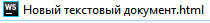

1. ПКМ клацнути на порожній простір у провіднику
З'явиться меню.
1. ПКМ клацнути на порожній простір у провіднику
З'явиться меню.
2.Вибираємо Створити
 3. З'явиться меню . у ньому треба вибрати текствоий документ.
3. З'явиться меню . у ньому треба вибрати текствоий документ.
 4. Далі треба змінити розширення файлу. Нв фото воно не виділено.
4. Далі треба змінити розширення файлу. Нв фото воно не виділено.
 5. Змінивши його натискаємо Ентер та погоджуємося із усім.
5. Змінивши його натискаємо Ентер та погоджуємося із усім.

6. Після зміни іконка файлу виглядатиме по-іншому.

Як створити новый файл
У цьому уроцы ви дызнаєтеся :
- Як створювати новий файл
- Як редагувати розширення файлу
- Як завантажувати программи
- Як відкривати файл за допомогою різних програм